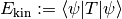
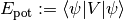

Observables¶
About the Observables class¶
The WaveBlocks Project
@author: R. Bourquin @copyright: Copyright (C) 2010, 2011, 2012 R. Bourquin @license: Modified BSD License
Inheritance diagram¶
Class documentation¶
- class WaveBlocksND.Observables¶
This class is the interface definition for general observable computation procedures.
- kinetic_energy(ket, T)¶
Compute the kinetic energy .
Parameters: - ket – The object denoted by
 .
. - T – The kinetic energy operator
 .
.
Raises NotImplementedError: Abstract interface.
- ket – The object denoted by
- potential_energy(ket, potential)¶
Compute the potential energy .
Parameters: - ket – The object denoted by .
- potential – The potential
 .
.
Raises NotImplementedError: Abstract interface.
- ket – The object denoted by